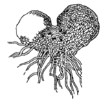
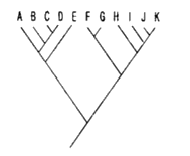
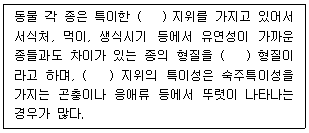
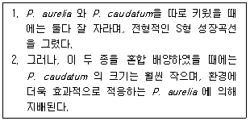
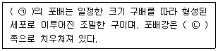
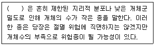
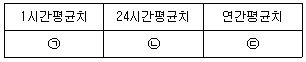
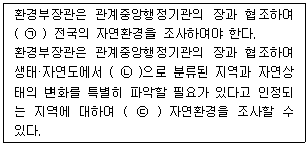
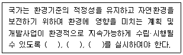
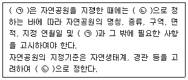

생물분류기사(식물) (2018-09-15 기출문제)
1과목: 계통분류학
1. 다음은 어떤 식물이며 생활사에서 어느 세대에 속하는가?

- 나자식물의 배우체
- 양치식물의 배우체
- 나자식물의 포자체
- 양치식물의 포차제
(정답률: 81%)

2. 구과식물 중 소나무과에 대한 설명으로 가장 거리가 먼 것은?
- 주로 교목 또는 관목이다.
- 씨에 육질종피가 발달하여 전체를 둘러싼다.
- 잎은 단엽이거나 또는 2, 3, 5개가 속생하는 침엽이다.
- 소포자엽의 배축면에 소포자낭 또는 화분낭이 달려 있다.
(정답률: 77%)
3. 계통학의 분석방법 중 “조상과 후손의 계통적 관계로서 각 후손으로부터 공동조상까지의 유연관계를 나타내는 방법론”에 해당하는 것은?
- 전형질 분석
- 분계 분석
- 수리질 분석
- 생식적 분석
(정답률: 93%)
4. 진드기목(응애목)은 절지동물문의 어느 강에 해당하는가?
- 거미강
- 배각강
- 갑각강
- 곤충강
(정답률: 80%)
5. 분류의 단계(카테고리)가 큰 것에서부터 작은 것으로 옳게 나열된 것은?
- 계 – 강 - 종 - 속
- 과 - 목 – 속 - 종
- 강 - 목 - 과 - 속
- 문 – 목 – 강 - 과
(정답률: 83%)
6. 가래아강(택사아강, Alismatidae)의 특징으로 가장 적합한 것은?
- 꽃은 대개 이생심피이다.
- 화분은 항상 1핵성이다.
- 자방이 하위이다.
- 유관속계는 목질화 되어 있다.
(정답률: 72%)
7. 학명(scientific name)과 비교하여 지방명(local name)의 장점인 것은?
- 국제적으로 인식된다.
- 단 하나씩이므로 안정성과 정확성을 기하기 쉽다.
- 생물학적으로 이용성이 많다.
- 기억하기 편리하고 익숙하다.
(정답률: 96%)
8. 남조류(cyanobacteria)는 다음 중 어느 생물에 해당하는가?
- 원핵생물(Monera)
- 원생생물(Protista)
- 균류(Fungi)
- 동물(Animalia)
(정답률: 75%)
9. 다음 중 화분을 설명하는 용어와 거리가 먼 것은?
- 적도면
- 향축면
- 극축
- 발아구
(정답률: 80%)
10. 모든 단세포생물들을 포함하기 위해 새로운 계인 원생생물을 제안하여 생물을 원생생물(모네라 포함), 식물, 동물의 3군으로 나누고 이것들을 모네라에서 갈라져 나온 것으로 표시한 학자는?
- Haeckel
- Whittaker
- Aristotle
- Hickman
(정답률: 85%)
11. 선형동물의 특징으로 거리가 먼 것은?
- 몸은 좌우대칭이며 원통모양이다.
- 체표에는 섬모가 발달하였다.
- 유체골격으로 몸을 지지한다.
- 대부분 암수딴몸이다.
(정답률: 71%)
12. 일반적으로 피자식물의 주요 형질 진화방향으로 옳지 않은 것은?
- 자방상위에서 자방하위로 진화했다.
- 배유가 없는 데서 있는 데로 진화했다.
- 망상맥에서 평행맥으로 진화했다.
- 다년생에서 일년생으로 진화했다.
(정답률: 70%)
13. 다음 식물 중 분열과를 갖고 있지 않는 것은?
- 꿀풀
- 꽃마리
- 현호색
- 미나리
(정답률: 79%)
14. 아래 계통수에서 단계통군(monophyletic group)이 아닌 것은?

- (F, G)
- (F, G, H, I, J, K)
- (K, J, I, H)
- (B, C, D, E)
(정답률: 88%)
15. 다음 중 생태적 변이(ecological variation)가 아닌 것은?
- 사고 및 기형적 변이
- 숙주에 따른 변이
- 일시적 기후조건에 따른 변이
- 서식처에 따른 변이
(정답률: 87%)
16. 다음은 분류학적 형질에 관한 설명이다. ( ) 안에 공통으로 가장 알맞은 것은?

- 생리적
- 생태적
- 형태적
- 행동적
(정답률: 94%)
17. 국제식물명명규약에서 규정한 과(family)의 문법적 어미는 어느 것인가?
- -opsida
- -ales
- -acae
- -alnus
(정답률: 67%)
18. 식물과와 수술의 특징이 잘못 짝지어진 것은?
- 국화과-취약웅예
- 아욱과-단체웅예
- 콩과(콩아과)-양체웅예
- 꿀풀과-돌기웅예
(정답률: 74%)
19. 다음 척추동물 중 턱이 없는 동물은?
- 도롱뇽
- 칠성장어
- 귀상어
- 철갑상어
(정답률: 89%)
20. 식물분류계급에 따른 학명의 어미 중 아계(亞界)에 해당하는 것은?
- -aceae
- -bionta
- -opsida
- -ales
(정답률: 70%)
2과목: 환경생태학
21. 호수의 수질에 관한 설명으로 가장 거리가 먼 것은?
- 호수의 3가지층 중 표수층과 심수층 사이의 수온약층은 통상 1m당 0.1℃의 수온 차이를 나타낸다.
- 여름의 성층현상은 겨울보다 강력한데 단지 몇 ℃의 수온차이만으로 혼합이 잘 발생하지 않는다.
- 호수의 물은 물의 밀도특성과 낮은 열전도율로 인해 봄에는 혼합, 여름에는 성층, 가을에는 혼합, 겨울에는 성층현상으로 하천과는 달리 다양한 변화를 갖는다.
- 여름철 성층현상은 봄철의 기상조건에 의해 달라지는데 봄철 기온이 높고 바람이 약할 경우 성층이 늦게 이루어진다.
(정답률: 63%)
22. 육상생태계의 천이과정을 순서대로 옳게 나열한 것은?
- 음수림-양수림-초본-관목림
- 관목림-초본-음수림-양수림
- 초본-관목림-양수림-음수림
- 음수림-양수림-관목림-초본
(정답률: 87%)
23. 다음 중 해양생물의 서식지로서 연안천해역(연안역: neritic)에 해당하지 않는 것은?
- 조간대
- 심해대
- 상부천해대
- 하부천해대
(정답률: 88%)
24. 두 종이 상호작용하는데 있어, 한 종은 이익을 얻지만 다른 종은 이해관계가 없는 것을 무엇이라고 하는가?
- 경쟁(competition)
- 상리공생(mutation)
- 편리공생(commensalism)
- 편해작용(amensalism)
(정답률: 86%)
25. 피식자의 종들이 위험하거나 맛이 없거나 또는 잡기 어려운 종들과 매우 흡사하거나, 속이기 위한 모델로서 어떤 종이 다른 종과 형태나 행동이 매우 흡사한 것을 무엇이라 하는가?
- 순응(accommodation)
- 경계(vigilance)
- 적응(adaptation)
- 의태(mimicry)
(정답률: 87%)
26. 유기체와 환경 간의 생지화학적 순환(biogeochemical cycle)의 기본 형태는 크게 기체형과 퇴적형(침전형)으로 나눌 수 있다. 다음 중 주로 퇴적형 순환으로 이루어진 것은?
- 질소 순환
- 인 순환
- 황 순환
- 탄소 순환
(정답률: 84%)
27. 개체군의 밀도를 측정하는 방법에 해당하지 않는 것은?
- 극서열법(polar ordination method)
- 방형구법(quadrat sampling)
- 전수조사(total counts)
- 재포획법(marking-recapture method)
(정답률: 83%)
28. 다음 중 종 다양성이 낮아서 하나 또는 두 종이 넓은 단순림을 이루는 산림형태는 어느 것인가?
- 열대 낙엽수림
- 북방 침엽수림
- 온대 낙엽수림
- 온대 우림
(정답률: 89%)
29. 지구에서 생물이 존재하는 부분을 일컫는 말로 가장 적합한 것은?
- 생물군계(biome)
- 생물권(biosphere)
- 환경(environment)
- 군집(community)
(정답률: 81%)
30. 다음 중 점오염원(point source)과 거리가 먼 것은?
- 가정하수
- 공단폐수
- 공장폐수
- 농경지 유출수
(정답률: 75%)
31. 물에 난용성이므로 수용성 가스와는 달리 강우에 의한 영향을 거의 받지 않을 뿐 아니라, 다른 물질의 흡착현상도 나타내지 않으며, 유해한 화학반응도 거의 일으키지 않는 오염물질은?
- 이황산가스
- 일산화탄소
- 황화수소
- 암모니아
(정답률: 75%)
32. 다음 토양수(水) 중 식물이 주로 이용하는 물은?
- 중력수
- 결합수
- 모관수
- 포장용수
(정답률: 75%)
33. 토양의 생성과정과 그 발달에 영향을 주는 요인으로 가장 거리가 먼 것은?
- 소음
- 기후
- 시간
- 인간의 활동
(정답률: 91%)
34. 산호초에 대한 설명으로 가장 거리가 먼 것은?
- 일반적으로 하조대로부터 깊이 50m 정도까지 서식한다.
- 산호초는 육지로부터 유입된 영양분이 풍부한 곳으로 한류의 영향을 받는 대륙의 서해안에서 주로 서식한다.
- 산호초에서 실제 살아있는 부분은 얇은 표면뿐이며, 그 아래는 죽은 골격인 탄산칼슘으로 되어 있다.
- 육지와 바다의 상대적인 관계에 따라 거초(fringing reef), 보초(barrier reef), 환초(atoll) 등으로 나눈다.
(정답률: 83%)
35. 2종의 짚신벌레(Paramecium)를 동시배양할 때와 따로 배양할 때의 결과는 다음과 같다. 이 과정을 설명하는 법칙은?

- 최소량의 법칙
- 경쟁 배제의 법칙
- 한계 효용의 법칙
- 내성의 법칙
(정답률: 82%)
36. 산림토양과 경작토양에 관한 비교 설명으로 가장 거리가 먼 것은?
- 자연성은 산림토양이 높고 경작토양이 낮다.
- 생산성은 일반적으로 산림토양이 높고 경작토양이 낮다.
- 양분공급은 산림토양은 자체 순환되나 경작토양은 외부의 공급을 받는다.
- 하층토양의 중요성은 산림토양의 경우가 크다.
(정답률: 90%)
37. 주어진 환경에서 무기한으로 지속할 수 있는 개체군(또는 종)의 최대 개체수를 무엇이라 하는가?
- 번식능력
- 환경수용력
- 한정요인
- 독립요인
(정답률: 86%)
38. 다음 중 1950년 멕시코의 공업지대인 포자리카에서 공장조작 중 누출된 오염물질로 인근마을에 누출되어 분지를 이룬 곳에서 기온역전으로 피해를 일으킨 주 오염물질에 해당하는 것은?
- 다이옥신
- 수은
- 카드뮴
- 황화수소
(정답률: 67%)
39. 다음 중 일반적으로 우점도를 비교하는데 사용되는 지수로 각 종류에 대한 비를 제곱하여 합함으로써 산출되는 것은?
- 알리(Allee) 지수
- 심프슨(Simpson) 지수
- K-전략지수
- r-전략지수
(정답률: 69%)
40. 다음 중 해수와 담수가 합해지는 지점에 형성되는 습지는?
- 저층습지
- 담수습지
- 기수습지
- 염습지
(정답률: 76%)
3과목: 형태학
41. 척수(Spinal cord)에 관한 설명으로 옳지 않은 것은?
- 척수는 신경배가 형성될 때 신경관의 전단부, 즉 뇌가 형성될 부위를 제외한 나머지 부위로부터 발생된다.
- 어류의 경우 외측에 섬유성 경질막과 내층에 맥관성인 유막으로 싸여 있다.
- 일반적으로 척수의 길이는 척주의 길이보다 짧다.
- 고등동물의 척수 끝부분은 원뿔 모양을 이루므로 이 부분을 척수원뿔이라 한다.
(정답률: 71%)
42. 다음 중 나이테가 형성되는 부위는?
- 1기 물관부
- 2기 물관부
- 원생 물관부
- 후생 물관부
(정답률: 85%)
43. 딱총나무속, 갈매나무속 식물의 엽병에서 볼 수 있는 후각조직으로서, 세포벽 물질의 축적이 절선단면 벽에 균일하게 이루어져서 두꺼우며, 방사단면 벽은 절선단면 벽보다 얇게 비후되어 있는 것은?
- 각우후각조직
- 환상후각조직
- 간극후각조직
- 판상후각조직
(정답률: 68%)
44. 다음 ( ) 안에 알맞은 것은?

- ㉠ 조류, ㉡ 식물극
- ㉠ 조류, ㉡ 동물극
- ㉠ 개구리, ㉡ 식물극
- ㉠ 개구리, ㉡ 동물극
(정답률: 84%)
45. 다음 중 8개의 단순한 판으로 구성된 패각을 갖는 연체동물은?
- 삿갓조개
- 달팽이
- 군부
- 앵무조개
(정답률: 84%)
46. 날개를 가지고 있는 곤충(유시류)들 중 고시류(Palaeoptera)에 속하는 것은?
- 집게벌레목과 흰개미목
- 딱정벌레목과 부채벌레목
- 매미목과 메뚜기목
- 하루살이목과 잠자리목
(정답률: 83%)
47. 해버스골공동계(Haversian system)[또는 골단위(osteon)]에 관한 설명으로 옳은 것은?
- 치밀골(compact bone)을 구성하는 반복되는 구조 단위이다.
- 적골수(red marrow)를 포함하고 있다.
- 해면골로 되어 있다.
- 죽어 있는 물질만을 포함한다.
(정답률: 73%)
48. 다음 중 힘줄과 인대를 구성하는 결합조직은?
- 뼈
- 연골
- 성긴결합조직
- 섬유성결합조직
(정답률: 73%)
49. 다음 중 중축골격(axial skeleton)에 속하는 것은?
- 상완골(humerus)
- 슬개골(patella)
- 가슴뼈(sternum)
- 요대(pelvic girdle)
(정답률: 70%)
50. 시중에서 판매되는 둥굴레차는 식물의 어느 기관으로 만드는가?
- 씨(seed)
- 줄기(stem)
- 잎(leaf)
- 뿌리(root)
(정답률: 72%)
51. 진딧물상과(上科)에 관한 설명으로 거리가 먼 것은?
- 유시형의 날개는 투명한 막상이며, 2쌍이다.
- 다리는 가늘고 길며, 발목마디는 2마디이나, 가끔 첫 마디는 퇴화하였고, 1쌍의 발톱이 있다.
- 진딧물은 남반구의 열대지방이 원산지인 것으로 보이며, 동일종은 계절이나 세대에 따라 형태가 같고, 종의 구분이 용이하다.
- 정상적인 생식방법은 양성생식이나, 더운 지방에 사는 종 중에는 단위생식을 하거나 또는 세대교번을 하기도 한다.
(정답률: 66%)
52. 다음과 같은 엽맥의 종류는?
- 차상맥
- 장상맥
- 평행맥
- 우상맥
(정답률: 90%)
53. 다음 중 측근은 주로 어디에서 분화되는가?
- 외피
- 내초
- 피층
- 유관속 형성층
(정답률: 86%)
54. 공변세포가 형성하는 구조는?
- 상표피
- 하표피
- 기공
- 해면조직
(정답률: 92%)
55. 인두와 기관을 이어주는 구조로 갑상연골, 피열연골, 윤상연골 등으로 이루어져 있는 기관은?
- 후두
- 기관지
- 아가미
- 횡격막
(정답률: 70%)
56. 하나의 마디에 3개 이상의 잎이 나는 잎차례(葉序)는?
- 대생
- 저생
- 윤생
- 호생
(정답률: 93%)
57. 단자엽식물인 벼과식물의 씨와 열매 구조의 특징에 관한 설명으로 옳지 않은 것은?
- 씨 속의 배는 배반이라는 자엽에 의해 배유와 맞닿아 있다.
- 벼과식물의 열매는 수과로서, 과피와 종피가 잘 구별되며 과피가 잘 벗겨진다.
- 배유(배젖)는 주로 단백질과 지방을 함유하는 호분층으로 둘러싸여 있다.
- 슈트 및 뿌리 정단부의 어린 눈(유아)과 어린 뿌리(유근)는 각각 자엽초 및 유근초로 덮여서 보호되어 있다.
(정답률: 80%)
58. 피자식물의 중복수정 과정에 포함된 핵의 종류와 개수를 바르게 나열한 것은?
- 2개의 정핵, 1개의 난핵, 2개의 극핵
- 2개의 정핵, 2개의 난핵, 1개의 극핵
- 2개의 정핵, 2개의 난핵, 2개의 극핵
- 1개의 정핵, 2개의 난핵, 1개의 극핵
(정답률: 75%)
59. 다음 중 상피조직(epithelial tissue)으로 이루어져 있지 않은 것은?
- 입의 내피
- 혈액
- 비강의 내피
- 분비선을 덮고 있는 조직
(정답률: 86%)
60. 다음 동물의 뇌 중 상대적으로 후각엽(Olfactory lobes)이 큰 것은?
- shark(상어)
- frog(개구리)
- alligator(악어)
- chicken(닭)
(정답률: 87%)
4과목: 보존 및 자원생물학
61. 생물다양성의 감소 및 쇠퇴에 대응하여 발전을 이루어 온 보전생물학은 종합과학이다. 이러한 보전생물학의 중추를 이루는 학문 분야들로만 이루어진 것은?
- 농학, 임학, 분류학
- 임학, 분류학, 환경윤리학
- 개체군생태학, 분류학, 유전학
- 동물경영학, 어류학, 생태학
(정답률: 89%)
62. 세계적으로 멸종위기에 처한 야생동식물의 상업적인 국제거래를 규제하고 생태계를 보호하기 위하여 1973년 워싱턴에서 채택된 협약은?
- WWF
- UNEP
- WCMC
- CITES
(정답률: 83%)
63. 멸종하기 쉬운 성질을 가진 종이 아닌 것은?
- 한정된 지역에 서식하는 종, 단일 또는 적은 수의 개체군으로 구성된 종, 개체군의 크기가 작은 종
- 개체군 크기가 축소되고 있는 종, 개체군 밀도가 낮은 종, 넓은 서식지가 필요한 종
- 몸 크기가 큰 종, 분산 능력이 없는 종, 계절적으로 이동하는 종, 유전적 변이가 적은 종
- 생태적 지위의 폭이 큰 종, 일반인의 관심이 적은 종, 조류의 경우 일반종
(정답률: 85%)
64. 국내의 고유종과 희귀종 및 법적으로 보호가 필요한 종들을 보전하기 위한 보전활동에 관한 설명으로 가장 거리가 먼 것은?
- 희귀한 생물이 살거나 민감한 군집이 있는 지역을 적극 개발하고, 생태 보전지의 생태학적 중재는 불필요하다.
- 희귀하고 위태로운 종과 군집에 대한 보호와 연구를 한다.
- 보전의 중요성에 대한 대중의 인식을 강화한다.
- 기금 모금 및 제공 등은 보전활동에 기여한다.
(정답률: 91%)
65. 세계 각 지역으로 외래종이 도입된 주요 배경으로 가장 거리가 먼 것은?
- 식민지 개척을 위한 가축의 이동
- 원예와 농업의 발달
- 운송의 발달
- 질병의 확산
(정답률: 85%)
66. 다음 각 용어에 대한 설명으로 옳지 않은 것은?
- 길드(guild) - 다른 동물에서 서로 다른 방법으로 환경자원을 이용하는 무리를 일컫음
- 생태적 지위(ecological niche) - 생물이 생태계에서 차지하는 구조적, 기능적 역할을 종합적으로 나타내는 개념
- 지위유사종(synusia) - 군집에서 생활형이 같은 종의 무리
- 주행성(dinurnal) - 낮에 활동하고 밤에는 자거나 활동하지 않는 종
(정답률: 79%)
67. 보전생물학 이해를 위한 일반적인 가정으로 가장 거리가 먼 것은?
- 생태적으로 복잡한 것이 좋다.
- 진화는 이로운 현상이다.
- 생물다양성은 본질적인 가치를 가지고 있다.
- 개체군과 생물종의 때아닌 절멸은 지극히 이로운 것이다.
(정답률: 90%)
68. 복원생태학에서 훼손된 생태계에 대한 접근 방법으로 가장 거리가 먼 것은?
- 방치(no action)
- 대체(replacement)
- 회복(rehabilitation)
- 개발(development)
(정답률: 79%)
69. 라이트(Wright)의 식을 이용하여 생식에 관여하는 개체수가 50인 개체군에서 희귀한 대립유전자의 소실로 인해 예상되는 세대당 이형접합율의 감소분은?
- 0.1%
- 0.5%
- 1.0%
- 5.0%
(정답률: 62%)
70. 동물원에서 종을 보존하는데 있어서 현재의 지식으로는 인위적인 사육이 “무척추동물에서” 불가능한 이유를 가장 잘 설명한 것은?
- 사육에 엄청난 비용이 소모되기 때문
- 생활주기가 복잡하여 생장 단계에 따라 먹이 습성과 생육에 요구되는 환경조건이 현저하게 다르기 때문
- 생식률이 매우 낮기 때문
- 체구가 매우 크거나 특수한 환경조건이 필요하기 때문
(정답률: 85%)
71. 망그로브 생태계에 대한 설명으로 가장 거리가 먼 것은?
- 온대 지역의 염분이 높은 초지 생태계이다.
- 새우나 어류의 산란과 서식장소가 된다.
- 건축자재, 숯 등 목재 공급원이 된다.
- 동남아시아의 망그로브 산림은 벼의 재배와 상업용 새우의 부화를 위한 벌채로 파괴되고 있다.
(정답률: 74%)
72. 다음은 대상종의 보전 범주에 관한 설명이다. ( ) 안에 가장 적합한 것은?

- 희귀종
- 지표종
- 깃대종
- 핵심종
(정답률: 87%)
73. 과학자들이 동물원에서 한 종의 보존을 위한 사육방법을 결정하기 전에 검토하여야 할 사항으로 거리가 먼 것은?
- 사육 개체수는 얼마나 필요하고 어느 정도가 그 종의 보존에 효과적인가?
- 인위적으로 사육하는 희귀종의 개체가 정말로 그 종을 대표하는가?
- 동물원에서 사육하여 보존하는 것이 정말로 그 종의 보전에 효과적인가?
- 어떤 개체를 사육하는 것이 동물원의 이익에 부합되는가?
(정답률: 88%)
74. 다음 중 생물다양성 보전과 관련한 국제협약이 아닌 것은?
- Taxonomic 협약
- CBD
- CITES
- 람사르 협약
(정답률: 74%)
75. 보호구역을 연결하는 생태통로는 동물의 보존에 필요한 방안이다. 다음 중 생태통로에 대한 설명으로 가장 거리가 먼 것은?
- 보호지역과 다른 보호지역 간의 분산과 이주를 가능하게 한다.
- 야생동물이 서식처 및 배우자를 찾아가는데 도움을 준다.
- 생태통로는 포식자를 피하는 장소로 활용되며, 해충과 질병의 확산방지에 중요한 역할을 한다.
- 동물과 차량 간의 충돌을 감소시켜 인명과 재산을 구할 수도 있는 장점이 있다.
(정답률: 89%)
76. 세계자연보호재단은 생물다양성은 많은 중요성을 내포하고 있다고 했는데, 다음 생물다양성의 가치 중 최우선적으로 고려되어야 할 사항은 무엇인가?
- 생태계의 유지와 지속성
- 의약품의 제공
- 교육적 가치
- 과학적 가치
(정답률: 85%)
77. 국가들은 유전적 다양성의 손실에 대한 대책에 많은 관심을 보이고 있는데, 이 유전적 다양성을 유지하려는 노력으로 가장 거리가 먼 것은?
- 정부, 법, 개인 차원에서 두루 노력하고 있다.
- 선진국에서 행해지고 있는 최신화된 기계화 농업이 특히 주목받고 있다.
- 유전자은행 설립 노력들이 진행되고 있다.
- 유전자원 확보와 이익 공유에 관한 국제지침을 마련하고 있다.
(정답률: 88%)
78. 어떤 두 종간의 상호작용에 관한 설명 중 두 개체군이 모두 이익을 얻으며, 서로 상호작용을 하지 않으면 생존하지 못하는 관계를 의미하는 용어는?
- 편리공생(commensalism)
- 항생(antibiosis)
- 상리공생(mutualism)
- 기생(parasitism)
(정답률: 91%)
79. 지구상에서 발생한 대절멸(mass extinction) 사건 중 가장 거대한 절멸 사건으로 77~96% 정도로 추산되는 해양 동물종이 사라진 시기로 옳은 것은?
- 5억년전 Ordovician기
- 3억4천5백만년전 Devonian기
- 2억5천만년전 Permian기
- 1억8천만년전 Triassic기
(정답률: 81%)
80. 생물다양성과 생물 군집의 보존을 위한 목적을 위해 가장 강력한 법적 조치로 일정한 곳을 보호지역을 지정하게 된다. 이러한 목적의 보호지역으로 보기 어려운 것은?
- 국립공원
- 습지보호지역
- 천연기념물 보호지역
- 생태조각공원
(정답률: 81%)
5과목: 자연환경관계법규
81. 습지보전법상 습지보전기본계획에 포함되어야 할 사항과 가장 거리가 먼 것은? (단, 기타사항 등은 제외)
- 습지보호지역 지정 · 해제에 관한 계획
- 습지조사에 관한 사항
- 습지보전을 위한 국제협력에 관한 사항
- 습지의 분포 및 면적과 생물다양성의 현황에 관한 사항
(정답률: 58%)
82. 야생생물 보호 및 관리에 관한 법률 시행규칙상 멸종위기 야생생물 Ⅰ급에 해당되지 않는 것은?
- 표범
- 금개구리
- 장수하늘소
- 크낙새
(정답률: 76%)
83. 국토기본법상 국토종합계획은 얼마의 기간을 단위로 하여 수립하는가?
- 2년
- 5년
- 10년
- 20년
(정답률: 63%)
84. 환경정책기본법상 국가 및 지방자치단체의 환경상태 상시 조사 · 평가 항목으로 가장 거리가 먼 것은? (단, 그 밖의 사항 등은 고려하지 않음)
- 환경의 질의 변화
- 환경오염 및 환경훼손 실태
- 글로벌환경친화 전문인력 양성현황
- 환경오염원 및 환경훼손 요인
(정답률: 86%)
85. 자연환경보전법규상 생태계 변화 관찰의 대상 지역으로 가장 거리가 먼 것은?
- 생물다양성이 풍부한 지역
- 멸종위기 야생생물의 서식지 · 도래지
- 외래종의 유입이 빈법하여 잦은 방제가 필요한 지역
- 자연환경의 보전가치가 높은 지역
(정답률: 75%)
86. 습지보전법상 “습지보호지역”의 지정 기준으로 가장 거리가 먼 것은?
- 자연 상태가 원시성을 유지하고 있거나 생물다양성이 풍부한 지역
- 습지생태계의 보전 상태가 불량한 지역 중 인위적인 관리 등을 통하여 개선할 가치가 있는 지역
- 특이한 경관적, 지형적 또는 지질학적 가치를 지닌 지역
- 희귀하거나 멸종위기에 처한 야생 동식물이 서식하거나 나타나는 지역
(정답률: 77%)
87. 자연환경보전법상 생태·경관보전지역 중 생태·경관완충보전구역의 설명으로 가장 적합한 것은?
- 생태계의 구조와 기능의 훼손방지를 위하여 특별한 보호가 필요한 지역
- 자연경관이 수려하여 특별히 보호하고자 하는 지역
- 생태 · 경관핵심보전구역에 둘러싸인 취락지역으로서 지속가능한 보전과 이용을 위하여 필요한 지역
- 생태 · 경관핵심보전구역의 연접지역으로서 생태 · 경관핵심보전구역의 보호를 위하여 필요한 지역
(정답률: 85%)
88. 국토기본법상 국토계획에 관한 설명 중 옳지 않은 것은?
- 국토종합계획 : 국토 전역을 대상으로 하여 국토의 장기적인 발전 방향을 제시하는 종합계획
- 도종합계획 : 도 또는 특별자치도의 관할구역을 대상으로 하여 해당 지역의 장기적인 발전 방향을 제시하는 종합계획
- 시 · 군종합계획 : 특별시·광역시·시 또는 군(광역시의 군은 제외한다)의 관할구역을 대상으로 하여 해당 지역의 기본적인 공간구조와 장기 발전 방향을 제시하고, 토지이용, 교통, 환경, 안전, 산업, 정보통신, 보건, 후생, 문화 등에 관하여 수립하는 계획으로서 「국토의 계획 및 이용에 관한 법률」에 따라 수립되는 도시·군 계획
- 부문별계획 : 특정 지역을 대상으로 특별한 정책목적을 달성하기 위하여 수립하는 계획
(정답률: 66%)
89. 환경정책기본법령상 NO2의 대기환경기준으로 옳은 것은? (단, 단위는 ppm)

- ㉠:0.15 이하, ㉡:0.⑤ 이하, ㉢:0.02 이하
- ㉠:0.10 이하, ㉡:0.06 이하, ㉢:0.03 이하
- ㉠:0.15 이하, ㉡:0.06 이하, ㉢:0.03 이하
- ㉠:0.18 이하, ㉡:0.10 이하, ㉢:0.⑤ 이하
(정답률: 63%)
90. 야생생물 보호 및 관리에 관한 법률 시행규칙상 곤충류 중 환경부 지정 멸종위기 야생생물 Ⅰ급이 아닌 것은?
- 장수하늘소
- 소똥구리
- 비단벌레
- 산굴뚝나비
(정답률: 57%)
91. 다음은 자연환경보전법상 자연환경조사에 관한 사항이다. ( ) 안에 가장 적합한 것은?

- ㉠5년마다, ㉡1등급 권역, ㉢2년마다
- ㉠10년마다, ㉡2등급 권역, ㉢매년
- ㉠10년마다, ㉡1등급 권역, ㉢2년마다
- ㉠5년마다, ㉡2등급 권역, ㉢매년
(정답률: 76%)
92. 습지보전법상 습지보호지역으로 지정·고시된 습지를 「공유수면 관리 및 매립에 관한 법률」에 따른 면허 없이 매립한 자에 대한 벌칙 기준은?
- 5년 이하의 징역 또는 5천만원 이하의 벌금
- 3년 이하의 징역 또는 3천만원 이하의 벌금
- 2년 이하의 징역 또는 2천만원 이하의 벌금
- 1년 이하의 징역 또는 1천만원 이하의 벌금
(정답률: 60%)
93. 환경정책기본법령상 수질 및 수생태계에서 “하천”의 항목별 환경기준으로 틀린 것은? (단, 사람의 건강보호 기준)
- 6가크롬(Cr6+) : 0.⑤mg/L
- 1,2-디클로로에탄 : 0.⑤mg/L 이하
- 유기인 : 검출되어서는 안 됨(검출한계 0.00⑤mg/L)
- 음이온계면활성제(ABS) : 0.5mg/L 이하
(정답률: 72%)
94. 다음은 환경정책기본법상 환경영향평가에 관한 사항이다. ( ) 안에 들어갈 말로 가장 거리가 먼 것은?

- 소규모환경영향평가
- 선정환경영향평가
- 전략환경영향평가
- 환경영향평가
(정답률: 66%)
95. 자연공원법상 자연공원 지정고시 및 지정기준에 관한 사항이다. ( ) 안에 공통으로 들어갈 말로 옳은 것은?

- ㉠ 국토관리청, ㉡ 환경부령
- ㉠ 공원관리청, ㉡ 환경부령
- ㉠ 공원관리청, ㉡ 대통령령
- ㉠ 국토관리청, ㉡ 대통령령
(정답률: 61%)
96. 독도 등 도서지역의 생태계 보전에 관한 특별법 시행령상 환경부장관이 조사원으로 하여금 무인도서 등의 자연생태계 등에 대한 원활한 조사를 하도록 하기 위해 관계중앙행정기관의 장 및 시·도지사에게 협조를 요청할 수 있는 사항으로 가장 거리가 먼 것은?
- 관할 출입제한구역안의 출입
- 도서조사원증의 발급 및 조사권 부여
- 조사에 필요한 선박 등 장비 및 인력의 지원
- 조사관련자료의 열람 또는 대출
(정답률: 63%)
97. 생물다양성 보전 및 이용에 관한 법률상 국가생물다양성전략의 수립 주기는?
- 1년 마다
- 2년 마다
- 5년 마다
- 10년 마다
(정답률: 59%)
98. 야생생물 보호 및 관리에 관한 법률상 환경부장관이 서식지외보전기관에서 천연기념물을 보전하게 하려는 경우 누구와 협의하여야 하는가?
- 환경보전협회장
- 문화재청장
- 산림청장
- 국토교통부장관
(정답률: 73%)
99. 국토의 계획 및 이용에 관한 법률 시행령상 기반시설의 분류 중 환경기초시설에 해당하지 않는 것은?
- 유수지
- 하수도
- 폐기물처리시설
- 폐차장
(정답률: 53%)
100. 국토의 계획 및 이용에 관한 법률상 용도지구의 지정에 관한 사항으로 옳지 않은 것은?
- 경관제한지구 : 풍수해, 산사태, 지반의 붕괴 그 밖의 재해를 예방하고 시설경관을 보호, 형성하기 위하여 필요한 지구
- 취락지구 : 녹지지역 · 관리지역 · 농림지역 · 자연환경보전지역 · 개발제한구역 또는 도시자연공원구역의 취락을 정비하기 위한 지구
- 특정용도제한지구 : 주거 및 교육 환경 보호나 청소년 보호 등의 목적으로 오염물질 배출시설, 청소년 유해시설 등 특정시설의 입지를 제한할 필요가 있는 지구
- 보호지구 : 문화재, 중요 시설물(항만, 공항 등 대통령령으로 정하는 시설물을 말한다) 및 문화적 · 생태적으로 보존가치가 큰 지역의 보호와 보존을 위하여 필요한 지구
(정답률: 60%)